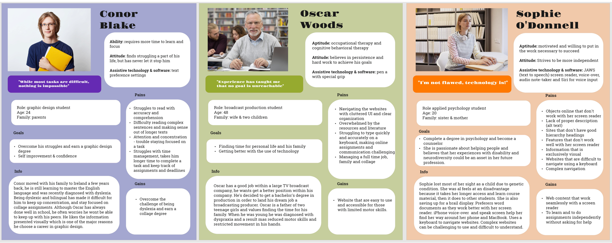
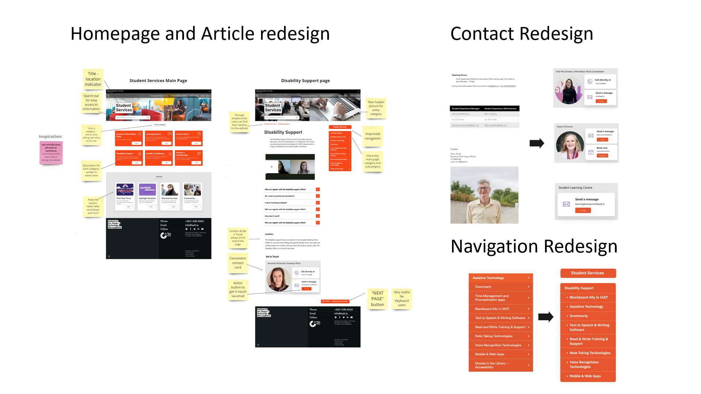

Accessibility Design
Project objective was to redesign the student services platform at our college, with a focus on improving accessibility for students with disabilities. To accomplish this, I divided my project into three phases: user research, accessibility research, and analysis and redesign of student services. During the user research phase, I developed three distinct accessibility personas on which I will be basing my design. I also had the opportunity to interview a visually impaired person, gaining valuable insights into their challenges and frustrations while navigating the web with a screen reader. Next, I conducted extensive research on best practices for accessibility and marked down the most important ones to implement in my prototype.
Existing Page Analysis
In the final stage, I thoroughly analysed the student services platform, identifying key areas where users experienced difficulties. I also performed an accessibility test using the Google Lighthouse tool. Through information architecture analysis I went through the entire content of the portal and examined the content of each individual page, evaluating factors such as plain language, clear heading, chunking, clarity of message, tone of voice and formatting. With this information in mind, I conducted usability testing with card sorting exercise and hierarchical task analysis. As a result, I developed a new category structure and improved content organization.

Prototype Redesign
Next I improved the main navigation by designing in a way that clearly shows the hierarchy: main page, category and subcategory, this kind of navigation is not only more clearly presented to users using a screen reader, but to other users as well. I identified one of the biggest paint points was the differences in content from page to page. In the prototype I addressed that problem by rewriting the content in a more consistent way and created a card with contact information and a call to action, which is the same on any page and easily located. On the main page I added a search bar, title, and featured section with the latest news. However, the most significant improvement was a new content management system. On the main page I created six cards with introductory sentences that provide a concise overview of the information which allows for easy information access. I also implemented strong orientation clues like student services title on every page and breadcrumbs as location indicators. Other improvements include: the use of active voice, plain language, chunking, using bullet points and correct use of heading hierarchy. The developed product is more accessible for students with disabilties, has improved information arhitecture, navigation and consistent content.
